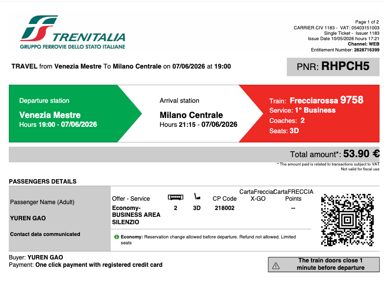
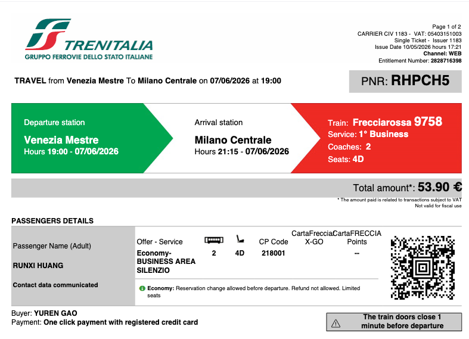

威尼斯主岛全天游览 + 晚间火车前往米兰
Mestre → 威尼斯主岛（Santa Lucia）→ 大运河Vaporetto → 圣马可广场 → 总督宫 → 里亚托桥 → 学院桥 → 火车去米兰
动线说明：不走回头路，从火车站沿大运河到圣马可，再一路向北穿小巷返回火车站
07:30 🍽️ 酒店早餐
08:30 🚆 火车前往威尼斯主岛
【路线】从 Mestre 乘火车到 Venezia Santa Lucia，这是最便捷的方式。
💡 小贴士：火车是最快最便捷的方式，下车即进入主岛核心区域，紧邻大运河码头。
08:45 🚤 大运河 Vaporetto 1号线
【亮点】威尼斯大运河（Grand Canal）呈反S型贯穿全城，是威尼斯最主要的水道。沿岸分布着100多座精美建筑，包括12-18世纪的贵族府邸。
💡 小贴士：1号线沿途经过里亚托桥、学院桥等景点，是最好的运河观光方式。右侧座位风景更佳。
09:30 ⛪ 圣马可广场 + 钟楼登顶
【亮点】拿破仑称它为"欧洲最美的客厅"，是威尼斯唯一的广场。四周被圣马可大教堂、总督宫、钟楼和新老行政官邸大楼环绕。
📱 预约攻略：钟楼可在现场购票，建议上午早点去排队较少。
💡 小贴士：广场上的咖啡厅价格昂贵（一杯咖啡€10+），建议拍照后去小巷用餐。钟楼登顶可360度俯瞰威尼斯全景。
11:00 🏰 总督宫 + 叹息桥
【亮点】威尼斯共和国时期的政治中心，哥特式建筑的杰作。叹息桥连接总督宫与监狱，囚犯们在这里发出最后的叹息。
📱 预约攻略：强烈建议提前网上购票！现场排队可能1小时以上。官网：palazzoducale.visitmuve.it
💡 小贴士：必看：黄金楼梯、议事厅（丁托列托《天堂》）、叹息桥、监狱。秘密行程（Secret Itineraries）需额外预约。
12:30 🍝 午餐
【推荐】威尼斯特色美食
💡 小贴士：圣马可广场周边餐厅价格虚高，往小巷深处走能找到更实惠的当地餐厅。墨鱼面是威尼斯必尝美食。
14:00 🌉 里亚托桥 (Ponte di Rialto)
【亮点】威尼斯最古老、最著名的大桥，建于1591年。桥两侧是密集的市场和商店，是拍摄大运河经典照片的最佳地点。
💡 小贴士：桥上人流拥挤，拍照建议在桥下或桥两侧。从圣马可广场步行前往约15分钟，沿途可欣赏威尼斯小巷风光。
15:00 🌉 学院桥 (Ponte dell'Accademia)
【亮点】学院桥横跨大运河，连接圣马可区和多尔索杜罗区。木质的桥身使其成为威尼斯最独特的大桥之一，也是欣赏大运河夕阳美景的最佳地点。
💡 小贴士：从里亚托桥沿大运河步行约20分钟可达学院桥，沿途可欣赏两岸贵族府邸。桥上可拍摄大运河经典全景照。
16:30 🚶 步行返回 Santa Lucia 火车站
【路线】从学院桥区域穿小巷步行返回 Santa Lucia 火车站，不走回头路完成主岛环线。
💡 小贴士：威尼斯小巷迷宫般错综复杂，但跟着人流和路标一般能到达火车站。沿途可以看到真正的威尼斯居民区，远离游客的喧嚣。
17:30 🚆 返回 Mestre 取行李
【路线】从 Santa Lucia 火车站乘火车返回 Mestre 酒店取行李。
💡 小贴士：在Mestre酒店取好行李后，准备前往米兰的火车。
19:00 🚆 火车前往米兰
✅ 已预订！红箭 Frecciarossa 9758（双人商务座）

👆 点击查看大图

👆 点击查看大图
💡 小贴士：
• 18:30前到达Mestre火车站，找到站台候车
• 登车时请向列车员出示PNR号：RHPCH5
• 静音车厢(SILENZIO)请保持安静，手机调静音
• 米兰中央火车站本身就是新艺术风格的建筑杰作，值得欣赏
21:15 🌙 抵达米兰
【米兰中央火车站】欧洲最大的火车站之一，本身就是新艺术风格的建筑杰作。
💡 小贴士：入住米兰酒店，附近简单晚餐。
Duo Milan Porta Nuova (Tribute Portfolio)
📍 Via Cosimo Del Fante 8, 20122 Milano
🚇 距离米兰中央火车站地铁2站